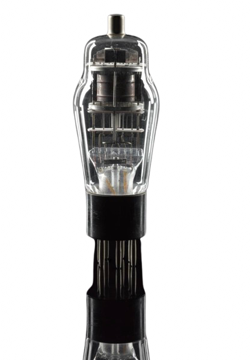
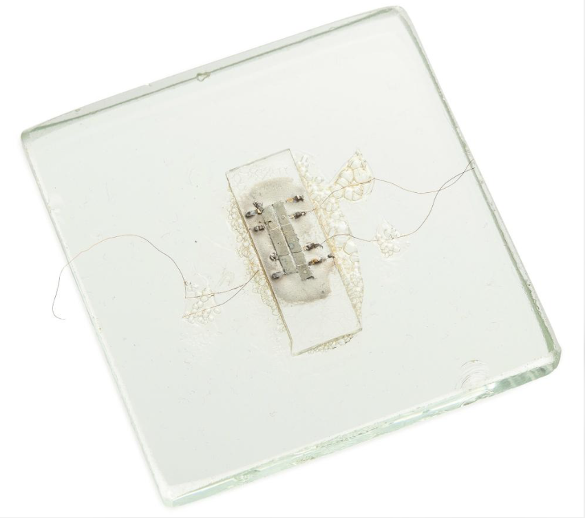

FROM GLASS TO SILICON
SMALLER.
FASTER.
EVERYWHERE.
How did computers shrink from rooms full of glass tubes into the technology we carry every day?
EXPLORE THE BREAKTHROUGHS
SPECIMEN I — 1940s
Vacuum Tube
Electronic switching before the transistor.
EXHIBIT 02 / THE SHRINKING CIRCUIT
THREE
OBJECTS.
ONE REVOLUTION.
Three breakthroughs transformed electronic computing, making machines smaller, more efficient, and increasingly practical.

01 - THE VACUUM TUBE
EARLY ELECTRONIC COMPUTING
->

02 - THE TRANSISTOR
1947 / BELL LABORATORIES
->

03 — THE INTEGRATED CIRCUIT
1958-1959 / THE NEXT BREAKTHROUGH
ARTIFACT INFORMATION
SELECT AN ARTIFACT TO EXPLORE
Choose one of the three objects above to discover how it transformed electronic computing.